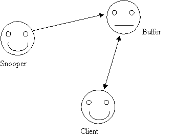
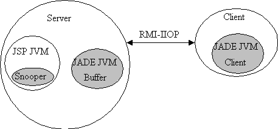

Author: Daniel Le Berre (daniel@cafe.newcastle.edu.au)
Date:
Java platform: Sun JDK 1.3 Windows, Sun JDK1.3 beta Solaris
JSP platform: Sun Java Server Web Development Kit (JSWDK) 1.0.1 , Jakarta Tomcat 3.1
JADE version 1.4 and 2.0
One of the major interest when adopting the Java Server Pages approach to generate dynamic HTML, is to be able to use available Java APIs to handle various work such as database connection, authentication, etc... One interesting feature of JSP is also the convenient way to handle forms with JavaBeans.
Since JADE is written in Java, it is pretty easy to integrate JADE agents with JSP. This allows you to have for instance an agent looking at all the connections made to a particularly sensitive web page, and report you each of them (this is particularly interesting in the Java Server Pages context for the error page for instance). This will be the application we are going to design in this tutorial.
This tutorial assumes that:
you are familiar with Java and have Java correctly installed.
you are familiar with JADE and have JADE correctly installed.
you are familiar with JSP and have a JSP enabled web server correctly installed.
We have three agents, namely snooper, buffer and client. Snooper is the agent that is living on the sensitive web page, client is an agent that must display the information concerning the connections to the web page to the webmaster. Since the latter can not be logged on his computer, buffer is an agent that will keep the information if the webmaster is not reachable. Furthermore, the snooper client must act quickly to not delay the availability of the web page, so it will just send the information for the webmaster trough the buffer, that will always be reachable. buffer will manage the connection with client: the latter will subscribe/unsubscribe when it is launched/stopped. It will check that the client has really received the information before deleting it.

Drawing
1 JADE agents
The three agents are really easy to construct. The code should work both under JADE 1.4 and JADE 2.0 after minor syntactical modifications given in the code.
There are two tips in this code:
I am using the block() method both on Client and Buffer agents to avoid CPU consumption overhead.
To be able to know if the client is alive or not, I need to wait for a reply from the client during 10 seconds. If no confirmation arrive, I suppose that the agent is not there and I do not clear the message in the buffer agent.
Now we have all our JADE agents defined. We need to integrate the Snooper agent in our web page. Here is how to proceed.
We first need to import some jade classes using the page import statement. Then we declare our agent, with an application scope. This is important because it means that the agent will have the same life than the enclosing servlet (the JSP page). So the agent will still living even if there is no connections to the page. Furthermore, all the initialization code defined between the useBean tags will be only executed once.
To be able to use JADE agent, we need at least one agent container on the JVM running the servlet. So we need to integrate the call to JADE platform or container, usually done from the command line, directly in the JSP page. Here I simulate a command line call with no option for JADE 1.4, with the "-container" for JADE 2.0, which means that the JADE platform is running on the same machine than the JSP web server. A JADE Agent Platform cannot be created within a JSP page because of security restrictions. In the next releases of JADE this limitation will probably be removed.
Once the JADE container is created, we need to register our Snooper agent to the container. This is done using the doStart() method. Note that the reference to our agent is the ID defined in the useBean declaration.
Now we can use our agent to snoop each connection to this JSP page. Here the message sends the name of the remote host, the date and the name of the web page.
Here is the architecture of our working JADE environment with a JSP page.

Drawing
2 JADE containers
The server contains two different JVM: one to run JSP/servlet plus one JADE container, and another one to run JADE platform. I don't see how to change this design since it does not seem possible to run the JADE platform directly inside JSP/Servlet JVM.
The client is running another instance of the JVM to run a second JADE container.
The interesting feature of this design is that the platform (and the buffer agent) is dissociated from the JSP page. Since each time that you change the JSP page you delete the snooper agent and his container, using a separate container for the buffer avoid to loose all the information it contains.
To run this example, compile the three agent java files. Put Snooper.class and Buffer.class in the server in a directory of the classpath of your JSP web server (the classes directory with tomcat, the webpages/WEB-INF/jsp/beans/ with JSWDK for instance). Do not forget to add JADE jar files in the lib directory of the JSP web server. (they will be added automatically on the JSP web server classpath). Put Client.class on the client computer. (I assume that JADE is installed on this computers). Remember that if you use the package examples.jsp, you have to put the class files in a subdirectory examples/jsp/. Put the file testjade.jsp in a directory accessible from your JSP web server (webpages/ for instance).
1. Run JADE platform with buffer agent on the server
java jade.Boot -platform buffer:examples.jsp.Buffer
2. Run the JSP page with the snooper agent on the server
request the testjade.jsp from your JSP web server
3. Run the client agent into a jade container on the client
java jade.Boot -container -host server.domain daniel:examples.jsp.Client